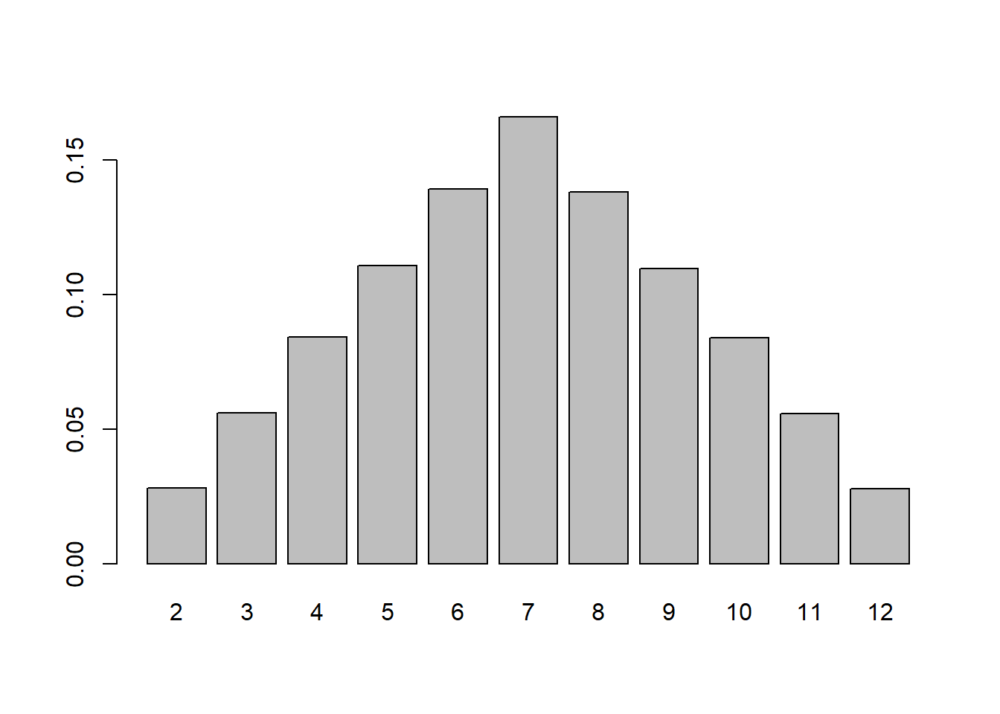
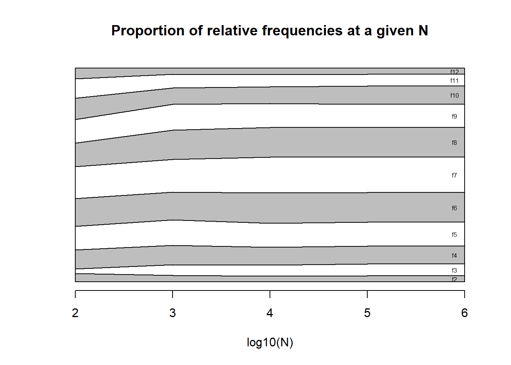
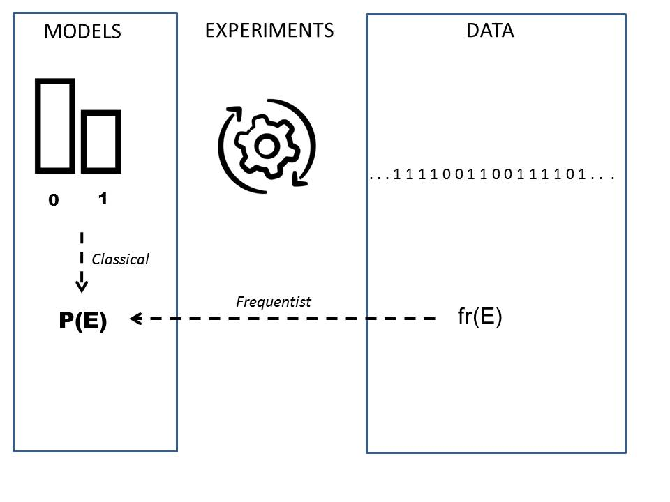

Chapter 3 probability
In this chapter we will introduce the concept of probability from relative frequencies.
We will define the events as the elements on which the probability is applied. Composite events will be defined using set algebra.
Then we will discuss the concept of conditional probability derived from the joint probability of two events.
3.1 Random experiments
Let’s remember the basic objective of statistics. Statistics deals with data that is presented in the form of observations.
- An observation is the acquisition of a number or characteristic from an experiment
Observations are realizations of results.
- An outcome is a possible observation that is the result of an experiment.
When conducting experiments, we often get different results. The description of the variability of the results is one of the objectives of statistics.
- A random experiment is an experiment that gives different results when repeated in the same way.
The philosophical question behind it is how can we know something if every time we look at it it changes?
3.2 Measurement probability
We would like to have a measure for the outcome of a randomized experiment that tells us how sure we are of observing the outcome when we perform a future randomized experiment.
We will call this measure the probability of the outcome and assign values to it:
0, when we are sure that the observation will not occur.
1, when we are sure that the observation will happen.
3.3 Classical probability
As long as a random experiment has \(M\) possible outcomes that are all equally likely, the probability of each \(i\) outcome is \[P_i =\frac{1}{ M}\].
Classical probability was defended by Laplace (1814).
Since every outcome is equally likely in this type of experiment, we declare complete ignorance and the best we can do is equally distribute the same probability for each outcome.
- We do not observe \(P_i\)
- We deduce \(P_i\) from our ratio and we don’t need to carry out any experiment to know it.
Example (dice):
What is the probability that we will get \(2\) on the roll of a die?
\(P_2=1/6=0.166666\).
3.4 Relative frequencies
What about random experiments whose possible outcomes are not equally likely?
How then can we define the probabilities of the outcomes?
Example (random experiment)
Imagine that we repeat a random experiment \(8\) times and obtain the following observations
8 4 12 7 10 7 9 12
- How sure are we of obtaining the result \(12\) in the following observation?
The frequency table is
## outcome ni fi
## 1 4 1 0.125
## 2 7 2 0.250
## 3 8 1 0.125
## 4 9 1 0.125
## 5 10 1 0.125
## 6 12 2 0.250
The relative frequency \(f_i =\frac{ n_ i }{ N}\) seems like a reasonable probability measure because
- is a number between \(0\) and \(1\).
- measures the proportion of the total number of observations that we observe of a particular result.
Since \(f_{12}=0.25\) then we would be one quarter sure, one out of every 4 observations, of getting \(12\).
Question: How good is \(f_i\) as a measure of certainty of the result \(i\)?
Example (random experiment with more repetitions)
Let’s say we repeat the experiment 100,000 more times:
The frequency table is now
## outcome ni fi
## 1 2 2807 0.02807
## 2 3 5607 0.05607
## 3 4 8435 0.08435
## 4 5 11070 0.11070
## 5 6 13940 0.13940
## 6 7 16613 0.16613
## 7 8 13806 0.13806
## 8 9 10962 0.10962
## 9 10 8402 0.08402
## 10 11 5581 0.05581
## 11 12 2777 0.02777and the barplot is

New results came out and \(f_{12}\) is now only \(0.027\), and so we are only \(\sim 3\%\) sure to get \(12\) in the next experiment. The probabilities measured by \(f_i\) change with \(N\).
3.5 Relative frequencies at infinity
A crucial observation is that if we measure the probabilities of \(f_i\) in increasing values of \(N\) they converge!
In this graph each vertical section gives the relative frequency of each observation. We see that after \(N=1000\) (\(log10(N)=3\)) the proportions hardly change with more \(N\).

We find that each of the relative frequencies \(f_i\) converges to a constant value
\[lim_{N\rightarrow \infty} f_i = P_i\]
3.6 Frequentist probability
We call Probability \(P_i\) the limit as \(N \rightarrow \infty\) of the relative frequency of observing the outcome \(i\) in a random experiment.
Defended by Venn (1876), the frequentist definition of probability is derived from (empirical) data/experience.
- We do not observe \(P_i\), we observe \(f_i\)
- We estimate \(P_i\) with \(f_i\) (usually when \(N\) is large), we write: \[\hat {P_ i}= f_i\]
Similar to the relationship between observation and result, we have the relationship between relative frequency and probability as a concrete value of an abstract quantity.
3.7 Classical and frequentist probabilities
We have situations where classical probability can be used to find the limit of relative frequencies:
- If the results are equally probable, the classical probability gives us the limit:
\[P_i=lim_{N\rightarrow \infty} \frac{n_i}{N}=\frac{1}{M}\]
- If the results in which we are interested can be derived from other equally probable results. We will see more about this when we study probability models.
Example (sum of two dice)
Our previous example is based on the sum of two dice. Although we perform the experiment many times, write down the results, and calculate the relative frequencies, we can know the exact value of probability.
This probability follows from the fact that the outcome of each die is equally likely. From this assumption, we can find that (Exercise 1)
\[ P_i = \begin{cases} \frac{i-1}{36},& i \in \{2,3,4,5,6, 7\} \\ \frac{13-i}{36},& i \in \{8,9,10,11,12\} \\ \end{cases} \]
The motivation of the frequentist definition is empirical (data) while that of the classical definition is rational (models). We often combine both approaches (inference and deduction) to find out the probabilities of our random experiment.

3.8 Definition of probability
A probability is a number that is assigned to each possible outcome of a random experiment and satisfies the following properties or axioms:
- when the results \(E_1\) and \(E_2\) are mutually exclusive; that is, only one of them can occur, so the probability of observing \(E_1\) or \(E_1\), written as \(E_1\cup E_2\), is their sum: \[ P( E_1\cup E_2) = P(E_1) + P(E_2)\]
- when \(S\) is the set of all possible outcomes, then its probability is \(1\) (at least something is observed): \[P(S)=1\]
- The probability of any outcome is between 0 and 1 \[P(E) \in [0,1]\]
Proposed by Kolmogorov’s less than 100 years ago (1933)
3.9 Probabilities Table
Kolmogorov properties are the basic rules for building a probability table, similar to the relative frequency table.
Example (Given)
The probability table for the throw of a dice
| result | probability |
|---|---|
| \(1\) | 1/6 |
| \(2\) | 1/6 |
| \(3\) | 1/6 |
| \(4\) | 1/6 |
| \(5\) | 1/6 |
| \(6\) | 1/6 |
| \(P( 1 \cup 2\cup ... \cup 6)\) | 1 |
Let’s verify the axioms:
Where \(1 \cup 2\) is, for example, the event of rolling a \(1\) or a \(2\). So \[ P( 1 \cup 2)=P(1)+P(2)=2/6\]
Since \(S= \{ 1,2,3,4,5,6\}\) is made up of mutually exclusive outcomes, then
\[P(S)=P(1\cup 2\cup ... \cup 6) = P(1)+P(2)+ ...+P(n)=1\]
- The probabilities of each outcome are between \(0\) and \(1\).
3.10 Sample space
The set of all possible outcomes of a random experiment is called the sample space and is denoted \(S\).
The sample space can be made up of categorical or numerical outcomes.
For example:
- human temperature: \(S = (36, 42)\) degrees Celsius.
- sugar levels in humans: \(S =( 70-80) mg/ dL\)
- the size of a production line screw: \(S =( 70-72) mm\)
- number of emails received in an hour: \(S = \{ 1, ...\infty \}\)
- the throw of a dice: \(S= \{ 1, 2, 3, 4, 5, 6\}\)
3.11 Events
An event \(A\) is a subset of the sample space. It is a collection of posible results.
Examples of events:
- The event of a healthy temperature: \(A=37-38\) degrees Celsius
- The event of producing a screw with a size: \(A=71.5mm\)
- The event of receiving more than 4 emails in an hour: \(A= \{ 4, \infty \}\)
- The event of obtaining a number less than or equal to 3 in the roll of a says: \(A= \{ 1,2,3\}\)
An event refers to a possible set of outcomes.
3.12 Algebra of events
For two events \(A\) and \(B\), we can construct the following derived events using the basic set operations:
- Complement \(A'\): the event of not \(A\)
- Union \(A \cup B\): the event of \(A\) or \(B\)
- Intersection \(A \ cap B\): the event of \(A\) and \(B\)
Example (given)
Let’s roll a die and look at the events (result set):
- a number less than or equal to three \(A:\{ 1,2,3\}\)
- an even number \(B:\{ 2,4,6\}\)
Let’s see how we can build new events with set operations:
- a number not less than three: \(A ':\{4,5,6\}\)
- a number less than or equal to three or even: \(A \cup B: \{ 1,2,3,4,6\}\)
- a number less than or equal to three and even \(A \cap B: \{ 2\}\)
3.13 Mutually exclusive results
Outcomes like rolling \(1\) and \(2\) on a die are events that cannot occur at the same time. We say that they are mutually exclusive.
In general, two events denoted as \(E_1\) and \(E_2\) are mutually exclusive when
\[E_1\cap E_2=\emptyset\]
Examples:
The result of having a misophonia severity of \(1\) and a severity of \(4\).
The results of obtaining \(12\) and \(5\) by adding the throw of two dice.
According to the Kolmogorov properties , only mutually exclusive outcomes can be arranged in probability tables, as in relative frequency tables.
3.14 Joint probabilities
The joint probability of \(A\) and \(B\) is the probability of \(A\) and \(B\). That’s \[P( A \cap B)\] or \(P(A,B)\).
To write joint probabilities of non mutually exclusive events (\(A \cap B \neq \emptyset\)) into a probability table, we note that we can always decompose the sample space into mutually exclusive sets involving the intersections:
\(S=\{A\cap B, A \cap B', A'\cap B, A'\cap B'\}\)
Let’s consider the Ven diagram for the example where \(A\) is the event that corresponds to drawing a number less than or equal to 3 and \(B\) corresponds to an even number:

The marginals of \(A\) and \(B\) are the probability of \(A\) and the probability of \(B\), respectively:
- \(P(A)=P(A\cap B') + P(A \cap B)=2/6+1/6=3/6\)
- \(P(B)=P(A'\cap B) +P(A \cap B)=2/6+1/6=3/6\)
We can now write the probability table for the joint probabilities
| Result | probability |
|---|---|
| \((A\cap B)\) | \(P(A \cap B)=1/6\) |
| \((A\cap B')\) | \(P(A \cap B')=2/6\) |
| \((A'\cap B)\) | \(P(A' \cap B)=2/6\) |
| \((A'\cap B')\) | \(P(A' \cap B')=1/6\) |
| sum | \(1\) |
Each result has \(two\) values (one for the feature of type \(A\) and one for type \(B\))
3.15 Contingency table
The joint probability table can also be written in a contingency table
| \(B\) | \(B'\) | sum | |
|---|---|---|---|
| \(A\) | \(P(A \cap B )\) | \(P(A\cap B' )\) | \(P(A)\) |
| \(A'\) | \(P(A'\cap B )\) | \(P(A'\cap B' )\) | \(P(A')\) |
| sum | \(P(B)\) | \(P(B')\) | 1 |
Where the marginals are the sums in the margins of the table, for example:
- \(P(A)=P(A \cap B') + P(A \cap B)\)
- \(P(B)=P(A' \cap B) +P(A \cap B)\)
In our example, the contingency table is
| \(B\) | \(B'\) | sum | |
|---|---|---|---|
| \(A\) | \(1/6\) | \(2/6\) | \(3/6\) |
| \(A'\) | \(2/6\) | \(1/6\) | \(3/6\) |
| sum | \(3/6\) | \(3/6\) | \(1\) |
3.16 The addition rule:
The addition rule allows us to calculate the probability of \(A\) or \(B\), \(P( A \cup B)\), in terms of the probability of \(A\) and \(B\), \(P(A \cup B )\). We can do this in three equivalent ways:
Using the marginals and the joint probability \[P(A \cup B)=P(A) + P(B) - P(A\cap B)\]
Using only joint probabilities \[P( A \cup B)=P(A \cap B)+P(A\cap B')+P(A'\cap B)\]
Using the complement of joint probability \[P(A \cup B)=1-P(A'\cap B')\]
Example (dice)
Take the events \(A:\{ 1,2,3\}\), rolling a number less than or equal to \(3\), and \(B:\{2,4,6\}\), rolling an even number on the roll of a dice.
Therefore:
\(P( A \cup B)=P(A) + P(B) - P(A\cap B)=3/6+3/6-1/6=5/6\)
\(P(A \cup B)=P(A \cap B)+P(A\cap B')+P(A'\cap B)=1/6+2/6+2/6=5/6\)
\(P(A \cup B)=1-P(A'\cap B')= 1-1/6=5/6\)
In the contingency table \(P( A \cup B)\) corresponds to the cells in bold (that is, all but 1/6 from the bottom right)
| \(B\) | \(B'\) | |
|---|---|---|
| \(A\) | 1/6 | 2/6 |
| \(A'\) | 2/6 | 1/6 |
3.17 Questions
We collect the age and category of 100 athletes in a competition
| \(age:junior\) | \(age:senior\) | |
|---|---|---|
| \(category:1st\) | \(14\) | \(12\) |
| \(category:2nd\) | \(21\) | \(18\) |
| \(category:3rd\) | \(22\) | \(13\) |
1) What is the estimated probability that an athlete is 2nd category and senior?
\(\qquad\)a: \(18/100\); \(\qquad\)b: \(18/43\); \(\qquad\)c: \(18\); \(\qquad\)d: \(18/39\)
2) What is the estimated probability that the athlete is not in the third category and is senior?
\(\qquad\)a: \(35/100\); \(\qquad\)b: \(30/100\); \(\qquad\)c: \(22/100\); \(\qquad\)d: \(13/100\)
3) What is the marginal probability of the third category?
\(\qquad\)a: \(13/100\); \(\qquad\)b: \(35/100\); \(\qquad\)c: \(22/100\); \(\qquad\)d: \(13/22\)
4) What is the marginal probability of being senior?
\(\qquad\)a: \(13/100\); \(\qquad\)b: \(43/100\); \(\qquad\)c: \(43/57\); \(\qquad\)d: \(57/100\)
5) What is the probability of being senior or third category?
\(\qquad\)a: \(65/100\); \(\qquad\)b: \(86/100\); \(\qquad\)c: \(78/100\); \(\qquad\)d: \(13/100\)
3.18 Exercises
3.18.0.1 Classical probability: Exercise 1
Write the table of joint probability for the results of rolling two dice; In the rows write the results of the first die and in the columns the results of the second die.
What is the probability of drawing \((3, 4)\) ? (R:1/36)
What is the probability of rolling \(3\) and \(4\) with any of the two dice? (R:2/36)
What is the probability of rolling \(3\) on the first die or \(4\) on the second? (To:11/36)
What is the probability of rolling \(3\) or \(4\) with any dice? (R:20/36)
Write the probability table for the result of the add of two dice. Assume that the outcome of each die is equally likely. Verify that it is:
\[ P_i= \begin{cases} \frac{i-1}{36},& i \in \{2,3,4,5,6, 7\} \\ \frac{13-i}{36},& i \in \{8,9,10,11,12\} \\ \end{cases} \]
3.18.0.2 Frequentist probability: Exercise 2
The result of a randomized experiment is to measure the severity of misophonia and the state of depression of a patient.
Misophonia
- severity: \(S_M:\{M_ 0,M _1,M_2,M_3,M_4\}\)
- Depression: \(S_ D:\{ D', D\}\))
Write the contingency table for the absolute frequencies (\(n_{ M,D }\)) for a study on a total of 123 patients in which it was observed
- 100 individuals did not have depression.
- No individual with misophonia 4 and without depression.
- 5 individuals with grade 1 misophonia and no depression.
- The same number as the previous case for individuals with depression and without misophonia .
- 25 individuals without depression and grade 3 misophonia .
- The number of misophonics without depression for grades 2 and 0 were distributed equally .
- The number of individuals with depression and misophonia increased progressively in multiples of three, starting at 0 individuals for grade 1.
Answer the following questions:
- How many individuals had misophonia ? (A:83)
- How many individuals had grade 3 misophonia ? (R:31)
- How many individuals had grade 2 misophonia without depression? (R:35)
Write down the contingency table for relative frequencies \(f_{ M,D }\). Suppose \(N\) is large and the absolute frequencies estimate the probabilities \(f_{ M,D }=\hat {P}(M \cap D)\). Answer the following questions:
- What is the marginal probability of severity 2 misophonia ? (R: 0.3)
- What is the probability of not being misophonic and not being depressed? (R:0.284)
- What is the probability of being misophonic or depressed? (R: 0.715)
- What is the probability of being misophonic and being depressed? (R: 0.146)
- Describe in spoken language the results with probability 0.
3.18.0.3 Exercise 3
We have carried out a randomized experiment \(10\) times, which consists of recording the sex and vital status of patients with some type of cancer after 10 years of diagnosis. We got the following results
## A B
## 1 male dead
## 2 male dead
## 3 male dead
## 4 female alive
## 5 male dead
## 6 female alive
## 7 female dead
## 8 female alive
## 9 male alive
## 10 male alive- Create the contingency table for the number (\(n_{ i,j }\)) of observations of each result (\(A,B\))
- Create the contingency table for the relative frequency (\(f_{ i,j }\)) of the results
- What is the marginal frequency of being a man? (R/0.6)
- What is the marginal frequency of being alive? (R/0.5)
- What is the frequency of being alive or being a woman? (R/0.6)
3.18.0.4 Theory: Exercise 4
From the second form of the addition rule, obtain the first and the third form.
What is the third form addition rule for the probability of three events \(P(A \cup B \cup C)\)?
3.18.1 Practice
Load misophonia data data_0.txt
Compute the contingency table of absolute frequencies for misophonia diagnosis (Misofonia.dic) and depression (depresion.dic)
Compute the contingency table of relative frequencies for misophonia diagnosis (Misofonia.dic) and depression (depresion.dic)
Compare the differences with exercise 2.